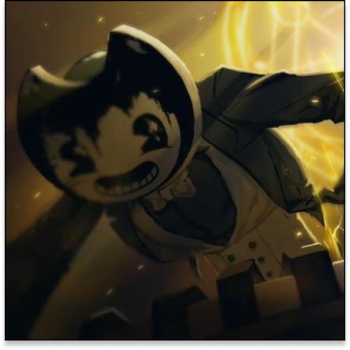
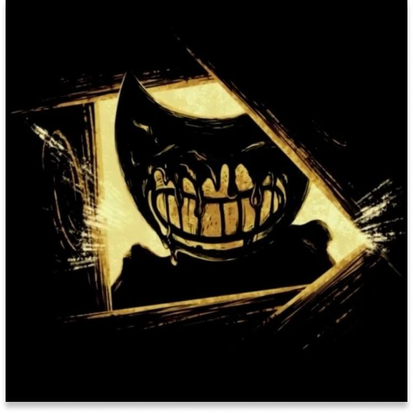
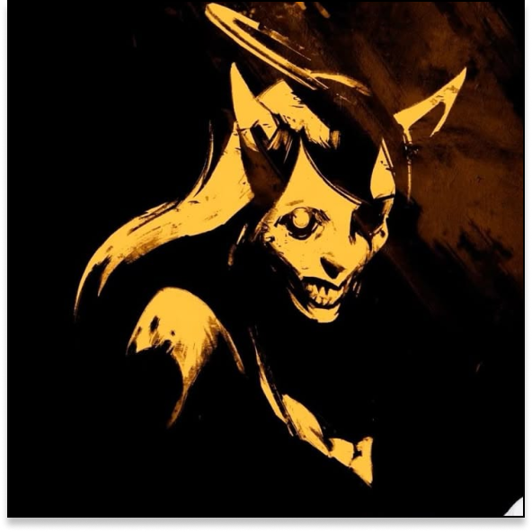
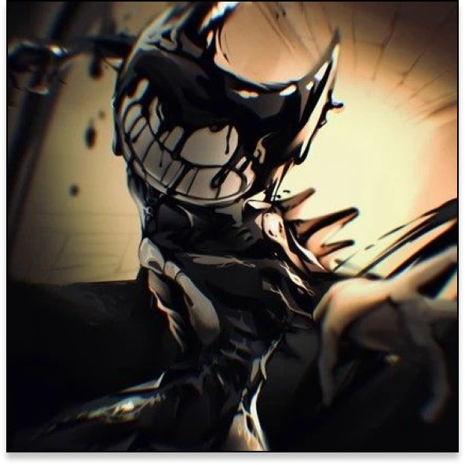

Henry Stein
Sammy Lawrence
Joey Drew

No Studio de animação
Na Maquina de Tinta
Na casa de Jack Fain

Não, Ele é imortal
Sim, quebrando o loop
Sim, desligando a maquina

Joey Drew
Henry Stein
Ele não foi criado, sempre existiu